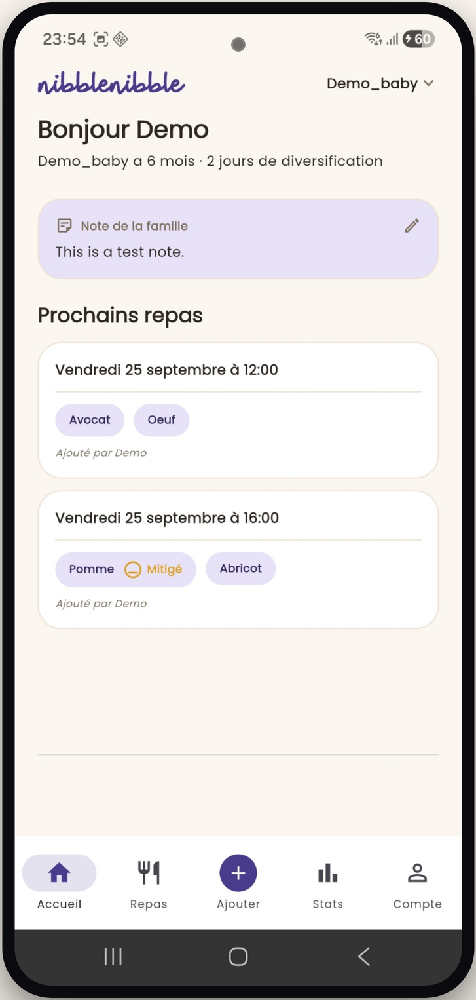
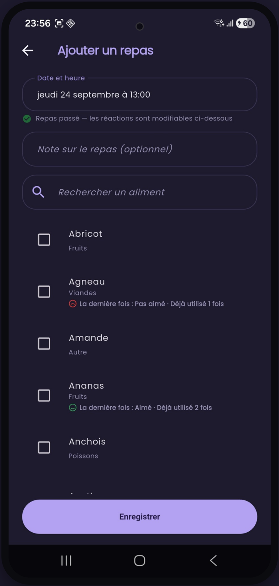
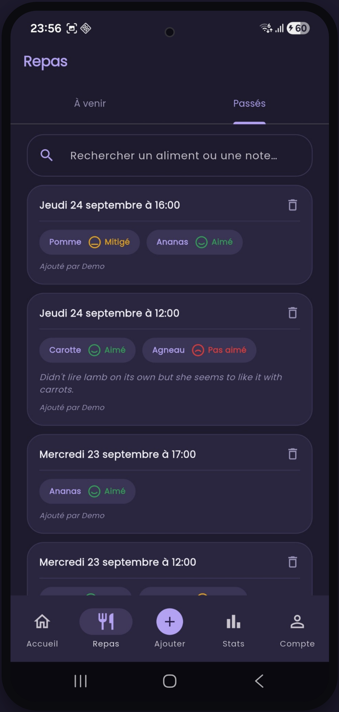
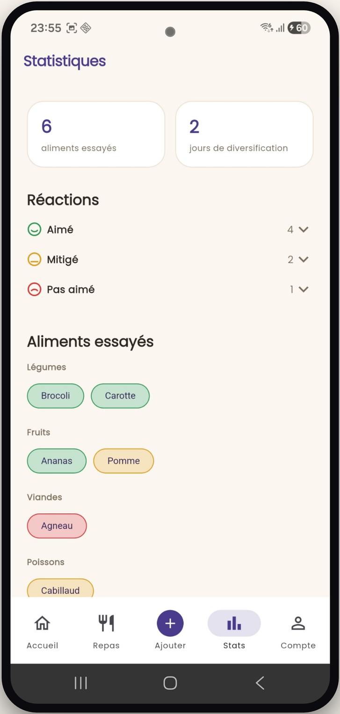
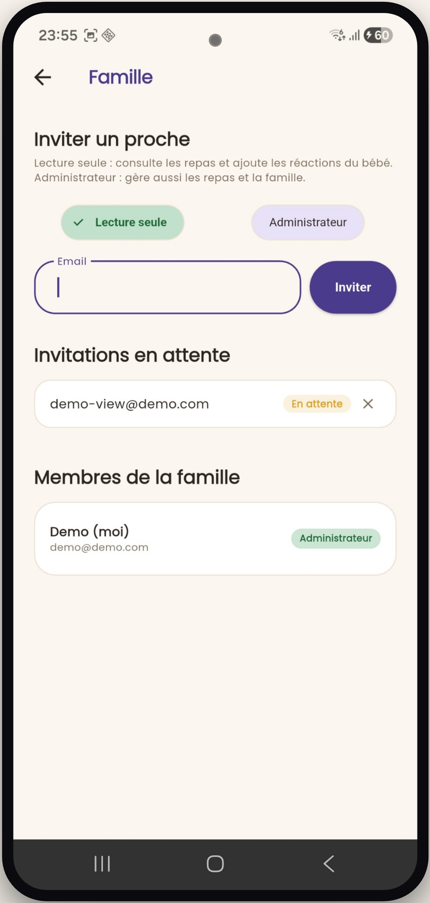

Suivez chaque repas de bébé, ensemble.
nibblenibble accompagne toute la famille pas à pas dans la diversification alimentaire : repas, réactions, statistiques et export PDF, au même endroit et en toute sérénité.

Tout ce qu'il faut pour la diversification de bébé
Un carnet de bord simple, pensé pour se remplir en quelques secondes entre deux repas.
Ajoutez un repas en quelques secondes
Enregistrez les aliments proposés et une note pour chaque repas ou chaque aliment. nibblenibble se souvient de ce que bébé a déjà goûté et de sa dernière réaction.
- ✓ Ajoutez des repas à venir ou passés
- ✓ Liste exhaustive d'aliments classés par catégorie

Un journal de repas complet
Retrouvez tout l'historique des repas de bébé, classé par date, avec une recherche rapide par aliment ou par note — pour ne jamais oublier ce qui a plu ou pas.
- ✓ Notez la réaction de bébé pour chaque aliment testé
- ✓ Export PDF du carnet complet, à tout moment

Des statistiques claires, en un coup d'œil
Combien d'aliments essayés, depuis combien de jours dure la diversification, et la répartition des réactions par catégorie : légumes, fruits, viandes, poissons...
- ✓ Compteurs mis à jour en temps réel
- ✓ Aliments essayés classés par catégorie et par réaction

Toute la famille impliquée
Invitez votre partenaire, la nounou ou un proche à consulter et compléter le carnet de bébé, avec deux niveaux d'accès : lecture seule ou administrateur.
- ✓ Invitation par email, en un instant
- ✓ Note de famille partagée sur l'accueil

Export PDF
Générez un PDF du carnet de repas de bébé à tout moment, depuis Compte → Exporter mes données.
3 langues
L'application est disponible en français, anglais et espagnol, pour toute la famille.
Vie privée respectée
Vos données restent privées et ne sont jamais revendues. nibblenibble est financée par des publicités discrètes.
Vos questions, nos réponses
Tout ce qu'il faut savoir avant de commencer avec nibblenibble.
Oui, l'application est entièrement gratuite. Elle est financée par des publicités discrètes et respectueuses — vos données ne sont jamais revendues.
Oui. Vos informations restent privées et ne sont jamais revendues à des tiers. Le détail complet est expliqué dans notre politique de confidentialité.
Bien sûr. Depuis l'onglet Famille, invitez un proche par email avec un accès en lecture seule (ajout de réactions) ou administrateur (gestion complète des repas et de la famille).
nibblenibble arrive prochainement sur Android via le Google Play Store. Une version iOS est également en préparation.
Oui, à tout moment depuis Compte → Exporter mes données, vous pouvez générer un PDF complet du carnet de repas de bébé.
Soyez prévenu·e dès le lancement
nibblenibble arrive bientôt sur le Google Play Store. Laissez-nous votre email et on vous écrit dès que l'app est disponible.